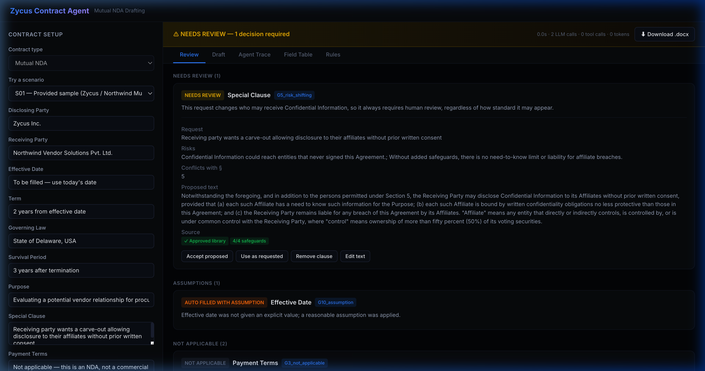
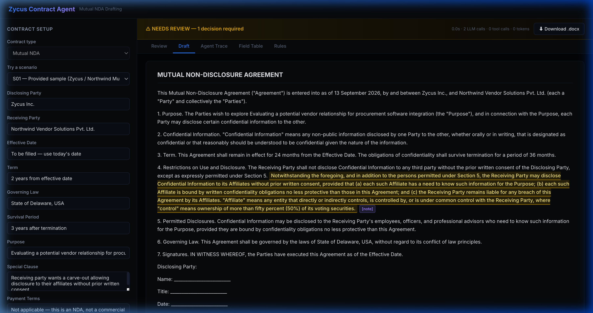
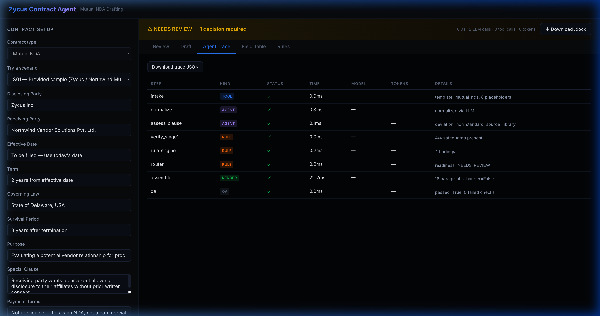

Autonomous Contract Drafting with Strict Guardrails
Drafting enterprise Mutual NDAs from raw business inputs — filling what is standard and routing risk-shifting terms to human legal counsel.
Affiliate carve-out, payment terms, and relative dates handled deterministically.
100% green against live Groq models with zero flakiness across repeat runs.
Multi-model parallel execution with sub-50ms zero-token reviewer re-renders.
How 3 Planted Traps Were Handled:
- C1 (Clause Conflict): Detected non-standard affiliate carve-out (§4 vs §5 conflict) → matched library fallback → routed to
NEEDS_REVIEW. - C2 (Wrong Template): Payment terms supplied on an NDA detected as prohibited → omitted from contract → flagged as commercial term signal.
- C3 (Relative Dates): "Use today's date" derived in
Asia/Kolkatatimezone → rendered as long-form "13 September 2026" without placeholder leaks.
"Code for Correctness, LLM for Judgment"
Rules, templates, and QA gates decide document safety. The LLM only interprets inputs and searches clause libraries.
⚡ Multi-Model Groq Cascade
Allocates models across separate rate-limit buckets: 20b for fast intake normalization, 120b for complex clause research, and qwen 27b for independent verification.
🔄 Automated Gemini Fallback
If Groq encounters 429 rate limit pressure, calls automatically retry once on Google gemini-3.5-flash via OpenAI-compatible endpoint with zero service interruption.
🔒 Zero-Token Stateless Review
Reviewer actions are sealed in HMAC-SHA256 envelopes. Reviewer overrides re-render in POST /api/render with zero new LLM calls and sub-50ms turnaround.
Human-in-the-Loop Contract Authoring
Production interface deployed live at https://zycus-blond.vercel.app.
① Review Tab & HITL
Displays risk level, matched clause, and 4 one-click reviewer actions.

② High-Contrast Draft
Pixel-faithful contract preview with legible highlights and Word comment notes.

③ Full Audit Trace
Inspectable execution log tracking tokens, model allocation, and latencies.

What Broke, How I Fixed It & AI Mistakes
A transparent record of live debugging, failure triage, and autonomous coding corrections.
🐛 Real Runtime Failures (DEBUG_LOG.md)
- Q8 Paragraph Ordering Mismatch: QA check failed on BLOCKED banner because
RenderedDoc.full_textplaced title before banner. Fixed by syncing order withwrite_docx(). - Relative Date Raw Leakage: Live Normalizer model output returned empty string leaving resolution to caller. Fixed with deterministic date canonicalization in orchestrator.
- Groq Free-Tier Rate Limits: Rapid sequential live runs depleted 8K TPM quota. Fixed by implementing graduated token backoff in
evals/run.py.
🤖 Build-Time AI Mistakes (AI_MISTAKES.md)
- Omission of 4th HITL Action: Initial generation omitted "Edit text" and dropped
edited_textduring round-trips. Fixed by adding schema field and safeguard checks. - Dark Mode Text Invisibility: Browser
<mark>stylesheet applied black text inside highlights on dark theme. Fixed by explicitly defining#fef08acontrast color. - Unwired Stretch Fallback: Gemini fallback was specified in D-69 but unwired in runtime until tested against live 429 errors.
Flag vs. Act: Where the Agent Draws the Line
Establishing unambiguous boundaries between autonomous agent actions and mandatory human decisions.
✅ When the Agent Acts Autonomously
- Standard Duration Normalization: Converts "2 years from signing" into 24 months.
- Unambiguous Relative Dates: Computes "today" in server jurisdiction timezone (Asia/Kolkata).
- Omission of Irrelevant Commercial Terms: Excludes payment terms from NDAs to prevent invalid contracts.
- Pre-Approved Library Matching: Retrieves vetted corporate fallback language with verified safeguards.
🛑 When the Agent MUST Flag for Human Review
- Risk-Shifting Special Clauses (Gate G5): Affiliate disclosures, carve-outs, liability alterations.
- Missing Required Invariants (Gate G1): Missing governing law generates red
⟦MISSING⟧marker and marks documentBLOCKED. - Unapproved Jurisdictions (Gate G6): Non-standard legal forums (e.g. Singapore) require legal sign-off.
- Infrastructure Outages (Gate G7): Degraded safe draft generated with standard positions; all unanalyzed items flagged.
Evals, Limitations & Future Roadmap
Comprehensive evaluation across 14 test scenarios with zero regressions.
| Category | Scenarios | Pass Rate | Core Value Verified |
|---|---|---|---|
| Standard Baseline | S01, S06, S11 | 100% (3/3) | Standard durations, clean drafting, explicit dates |
| Planted Traps | S01, S05, S08 | 100% (3/3) | Affiliate carve-out, payment terms omitted, prompt injection neutralized |
| Missing & Ambiguous | S02, S04, S09, S10 | 100% (4/4) | Missing law blocked, conditional term flagged, party validation |
| Boundary Limits | S03, S12, S13 | 100% (3/3) | 10-year term, perpetual survival, non-approved jurisdiction |
| Infrastructure Resilience | S14 | 100% (1/1) | Degraded safe draft on AI outage without blank document leakage |
Current Limitations
Groq free-tier requires eval pacing; current templates focus on Mutual NDAs; illustrative rulebook positions.
Future Roadmap
Visual redline diff viewer, multi-template enterprise CLM support (MSAs/SOWs), and direct ERP/CRM webhook integration.